class: center, middle # Optimization of linear models Mathieu Blondel .affiliations[ Google Research, Brain team ] .footnote.tiny[Credits: some figures are borrowed from the scikit-learn [mooc](https://github.com/inria/scikit-learn-mooc/). ] --- # Goals of this lecture - Understand how to formulate the objective function of a linear regression -- - Derive the closed form formula in the case of ridge regression -- - Understand how to formulate the objective function of logistic regression -- - Solve the logistic regression objective using gradient descent --- class: center, middle # Ridge regression --- # Recap on linear models - A prediction model is a function $f$ that maps a feature vector $\mathbf{x} \in \mathbb{R}^d$ to a target $y \in \mathbb{R}$. -- - Linear model without intercept term $$ f(\mathbf{x}) = \sum_{i=1}^d w_i x_i = \mathbf{w}^\top \mathbf{x} = w\_1 x\_1 + \dots + w\_d x\_d $$ -- - Linear model with intercept term $$ f(\mathbf{x}) = w\_0 + \mathbf{w}^\top \mathbf{x} = w\_0 + w\_1 x\_1 + \dots + w\_d x\_d $$ --- # An example: Adult census .super-tiny[ | Age | Workclass | Education | Marital-status | Occupation | Relationship | Race | Sex | Capital-gain | Hours-per-week | Native-country | Salary | | --- | --------- | ------------ | ------------------ | ------------------ | ------------ | ----- | ---- | ------------ | -------------- | -------------- | ----- | | 25 | Private | 11th | Never-married | Machine-op-inspct | Own-child | Black | Male | 0 | 40 | United-States | $45k | | 38 | Private | HS-grad | Married-civ-spouse | Farming-fishing | Husband | White | Male | 0 | 50 | United-States | $40k | | 28 | Local-gov | Assoc-acdm | Married-civ-spouse | Protective-serv | Husband | White | Male | 0 | 40 | United-States | $60k | ] <br/><br/> Salary = 0.4 x Education + 0.2 x Hours-per-week + 0.1 x Age + ... Features are also commonly called explanatory variables. Weights are interpretable, large magnitude indicating feature importance. --- # Linear regression $(d=1)$ .center[ <img src="../02_intro_to_machine_learning/figures/linear_data.svg" width="50%"> ] Predict the value of the target $y$ given some feature vector $\mathbf{x}$. --- # Linear regression $(d=1)$ .center[ <img src="../02_intro_to_machine_learning/figures/linear_fit.svg" width="50%"> ] $$ f(x) = w_1 x + w_0 $$ - $w_1$: the slope (coefficient directeur, pente) - $w_0$: the intercept (ordonnée à l'origine) --- ## Prediction errors .center[ <table> <tr> <td style="border: 0px"> <img src="../02_intro_to_machine_learning/figures/linear_fit_red.svg" width="80%"> </td> <td style="border: 0px"> <img src="../02_intro_to_machine_learning/figures/lin_reg_3D.svg" width="75%"> </td> </tr> </table> ] - Residuals $$ y_i - f(\mathbf{x}_i) = y_i - \mathbf{w}^\top x_i \quad \text{for all } i \in \{1, \dots, n\} $$ -- - Squared errors $$ \frac{1}{2} (y_i - f(\mathbf{x}_i))^2 = \frac{1}{2} (y_i - \mathbf{w}^\top x_i)^2 \quad \text{for all } i \in \{1, \dots, n\} $$ --- ## Formulating an objective function .center[ <table> <tr> <td style="border: 0px"> <img src="../02_intro_to_machine_learning/figures/linear_fit_red.svg" width="80%"> </td> <td style="border: 0px"> <img src="../02_intro_to_machine_learning/figures/lin_reg_3D.svg" width="75%"> </td> </tr> </table> ] - Find $\mathbf{w}$ so as to minimize the sum of squared errors ("least squares") .small[ $$ \frac{1}{2} (y\_1 - \mathbf{w}^\top \mathbf{x}\_1)^2 + \dots + \frac{1}{2} (y\_n - \mathbf{w}^\top \mathbf{x}\_n)^2 = \frac{1}{2} \sum\_{i=1}^n (y\_i - \mathbf{w}^\top \mathbf{x}\_i)^2 $$ ] -- - Or in matrix notation: $\frac{1}{2} ||\mathbf{y} - \mathbf{X} \mathbf{w}||^2$ --- # Regularization - If the weights $w_j$ have too large magnitude $|w_j|$, the model could do poorly on new data -- - Add a penalty term $\sum\_{j=1}^d w_j^2 = ||\mathbf{w}||^2$ that will promote solutions with lower magnitude -- - Penalized objective (ridge regression) $$ L(\mathbf{w}) = \frac{1}{2} ||\mathbf{y} - \mathbf{X} \mathbf{w}||^2 + \frac{\alpha}{2} ||\mathbf{w}||^2 $$ -- - Let us derive the analytical solution! --- # Convex functions .center[ 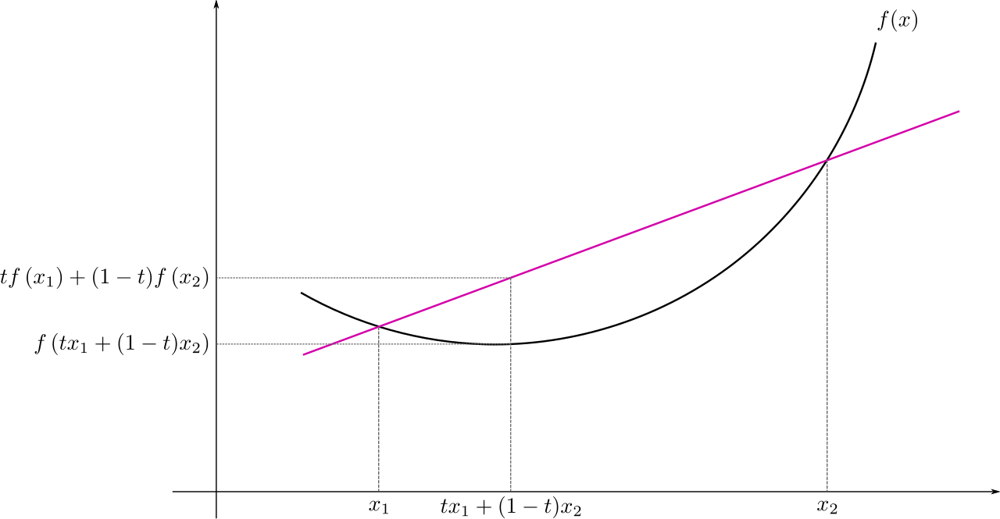 ] A function $f(x)$ is said to be convex if the line segment between two points always lies above the graph between these two points $$ t f(x_1) + (1-t) f(x_2) \le f(t x_1 + (1-t) x_2) \forall x_1, x_2, t \in [0,1] $$ --- # Gradient - The gradient of a function $L$ from $\mathbb{R}^d$ to $\mathbb{R}$ at a point $\mathbf{w} \in \mathbb{R}^d$ is the vector whose components are the partial derivatives of $L$ $$ \nabla L(\mathbf{w}) = \begin{bmatrix} \frac{\partial L(\mathbf{w})}{\partial w_1} \\\\ \frac{\partial L(\mathbf{w})}{\partial w_2} \\\\ \dots \\\\ \frac{\partial L(\mathbf{w})}{\partial w_d} \\\\ \end{bmatrix} \in \mathbb{R}^d $$ -- - It is a vector field: it associates a vector in $\mathbb{R}^d$ to any point in $\mathbb{R}^d$ -- - If $\nabla L(\mathbf{w})$ is non-zero, it points to the direction of [steepest ascent](https://www.khanacademy.org/math/multivariable-calculus/multivariable-derivatives/gradient-and-directional-derivatives/v/why-the-gradient-is-the-direction-of-steepest-ascent) --- # Stationary points - A stationary point is a point where the gradient is zero (red circles in the figures below) .center[ 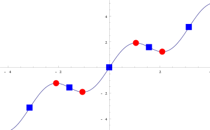 ] - For convex functions (as is the case of $L(\mathbf{w})$ for ridge regression), stationary points are optimal solutions --- # Analytical solution - For ridge regression, the gradient of $L(\mathbf{w})$ is $$ \nabla L(\mathbf{w}) = - \mathbf{X}^\top (\mathbf{y} - \mathbf{X} \mathbf{w}) + \alpha \mathbf{w} $$ -- - Setting the gradient to zero, we obtain $$ \mathbf{X}^\top \mathbf{X} \mathbf{w} + \alpha \mathbf{w} = \mathbf{X}^\top \mathbf{y} $$ -- - Simplifying, we obtain $$ \mathbf{w}^\star = (\mathbf{X}^\top \mathbf{X} + \alpha \mathbf{I})^{-1} \mathbf{X}^\top \mathbf{y} $$ --- class: center, middle # Logistic regression --- # Binary classification .center[ <img src="../02_intro_to_machine_learning/figures/categorical.svg" width="50%" /> ] For binary classification (i.e., with only two classes), $y$ can only take two values: $1$ (positive) or $0$ (negative) --- # Sigmoid function - The linear model $f(\mathbf{x}) = \mathbf{w}^\top \mathbf{x}$ is not taking advantage of the fact that the target $y$ can only take two possible values ($1$ or $0$). -- - The sigmoid function $\sigma(u) = \frac{1}{1 + e^{-u}}$ maps $\mathbb{R}$ to $[0,1]$ .center[ 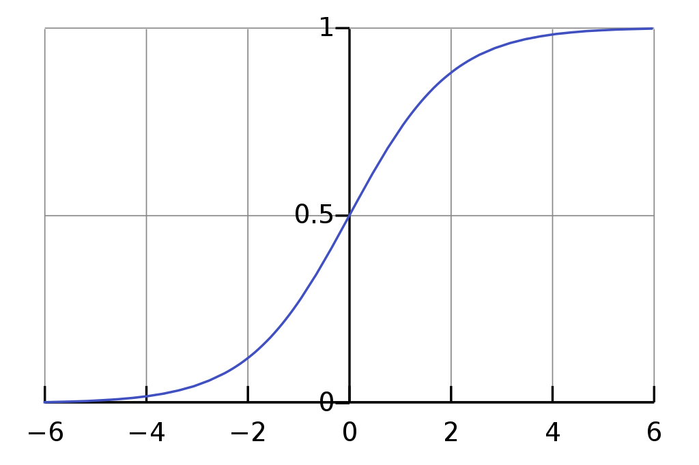 ] --- # Logistic regression - Maps the linear model's prediction to $[0,1]$ using the sigmoid function $$ \sigma(f(\mathbf{x})) = \sigma(\mathbf{w}^\top \mathbf{x}) = \frac{1}{1 + e^{-\mathbf{w}^\top \mathbf{x}}} $$ <br/><br/> .center[ <img src="../02_intro_to_machine_learning/figures/logistic_color.svg" width="50%"> ] --- # Objective function - A naive objective function would be $$ \sum_{i=1}^n (y_i - \sigma(\mathbf{w}^\top \mathbf{x}_i))^2 + \frac{\alpha}{2} ||\mathbf{w}||^2 $$ Non-convex, as the composition of $(\cdot)^2$ and $\sigma$ is not convex! - We will use (penalized) maximum likelihood estimation instead. --- # Likelihood of one sample - $\sigma(\mathbf{w}^\top \mathbf{x})$ can be interpreted as the probability that $y=1$ is the target associated with $\mathbf{x}$ -- - $1 - \sigma(\mathbf{w}^\top \mathbf{x})$ can be interpreted as the probability that $y=0$ is the target -- - Combining the two, we can write the likelihood of $(\mathbf{x}, y)$ under the model as $$ \begin{aligned} \sigma(\mathbf{w}^\top \mathbf{x}) \quad \text{if} \quad y = 1 \\\\ (1- \sigma(\mathbf{w}^\top \mathbf{x})) \quad \text{if} \quad y = 0 \end{aligned} $$ -- - which we can write more concisely as $$ \sigma(\mathbf{w}^\top \mathbf{x})^y (1-\sigma(\mathbf{w}^\top \mathbf{x}))^{1 - y} $$ --- # Likelihood of the entire dataset - The likelihood of $(\mathbf{x}\_1, y\_1)$, ..., $(\mathbf{x}\_n, y\_n)$ for the model is .small[ $$ \prod_{i=1}^n \sigma(\mathbf{w}^\top \mathbf{x}\_i)^{y\_i} (1-\sigma(\mathbf{w}^\top \mathbf{x}\_i))^{1 - y\_i} $$ ] -- - The log-likelihood is .tiny[ $$ \sum_{i=1}^n y\_i \log \sigma(\mathbf{w}^\top \mathbf{x}\_i) + (1-y\_i) \log (1-\sigma(\mathbf{w}^\top \mathbf{x}\_i)) $$ ] --- # Penalized maximum likelihood - Maximize with respect to $\mathbf{w}$ the log-likelihood .small[ $$ \sum_{i=1}^n y\_i \log \sigma(\mathbf{w}^\top \mathbf{x}\_i) + (1-y\_i) \log (1-\sigma(\mathbf{w}^\top \mathbf{x}\_i)) $$ ] -- - Or equivalently minimize the negative likelihood .small[ $$ -\sum_{i=1}^n y\_i \log \sigma(\mathbf{w}^\top \mathbf{x}\_i) + (1-y\_i) \log (1-\sigma(\mathbf{w}^\top \mathbf{x}\_i)) $$ ] -- - Add a regularization term .small[ $$ L(\mathbf{w}) = -\sum_{i=1}^n y\_i \log \sigma(\mathbf{w}^\top \mathbf{x}\_i) + (1-y\_i) \log (1-\sigma(\mathbf{w}^\top \mathbf{x}\_i)) + \frac{\alpha}{2} ||\mathbf{w}||^2 $$ ] --- # Solving the objective function - The optimal solution no longer enjoys a closed form solution (unlike ridge regression) -- - Nonetheless, we can solve the objective numerically using gradient descent. -- - Moreover, the objective function is convex, as the combination of $\log$ and $\sigma$ is convex! --- # Gradient descent - $-\nabla L(\mathbf{w})$ points in the direction of steepest **descent** -- - Initialize $\mathbf{w}^0$ to some value (a vector of all zeroes will do) -- - On iteration $t + 1$, do $$ \mathbf{w}^{t + 1} = \mathbf{w}^t - \eta \nabla L(\mathbf{w}^t) $$ where $\eta > 0$ is a step size parameter --- .center[ 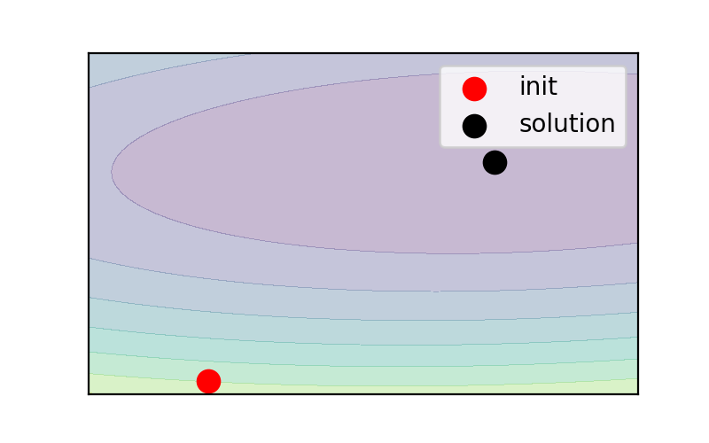 ] --- .center[ 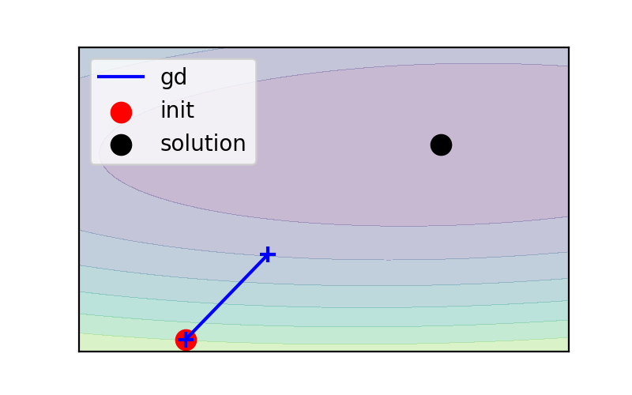 ] --- .center[ 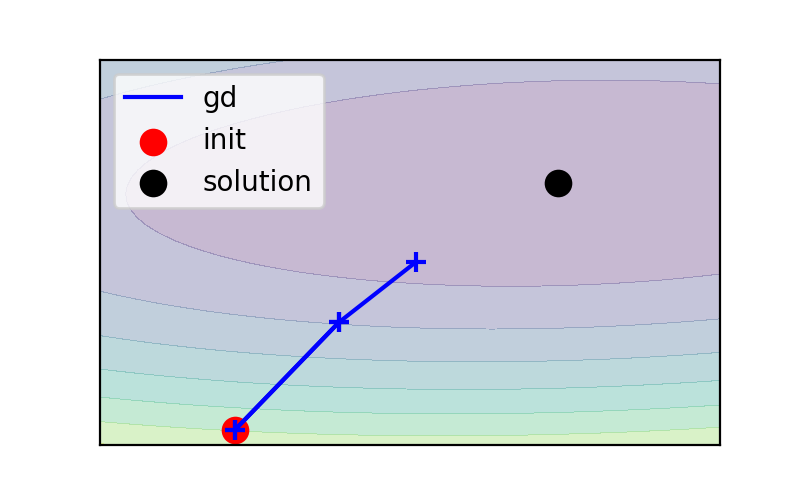 ] --- .center[ 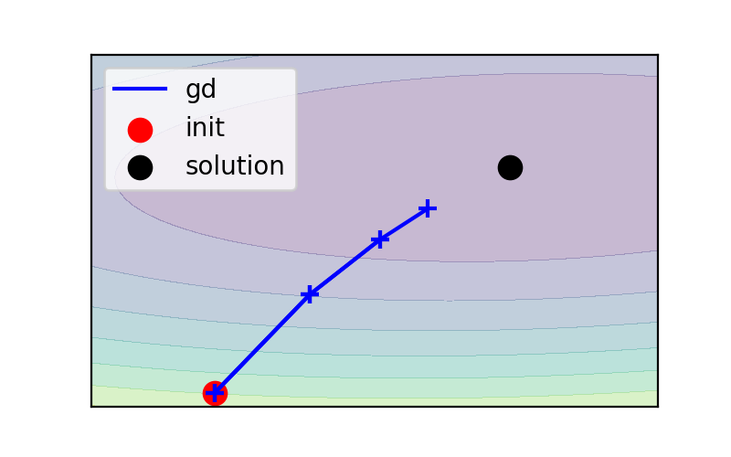 ] --- .center[ 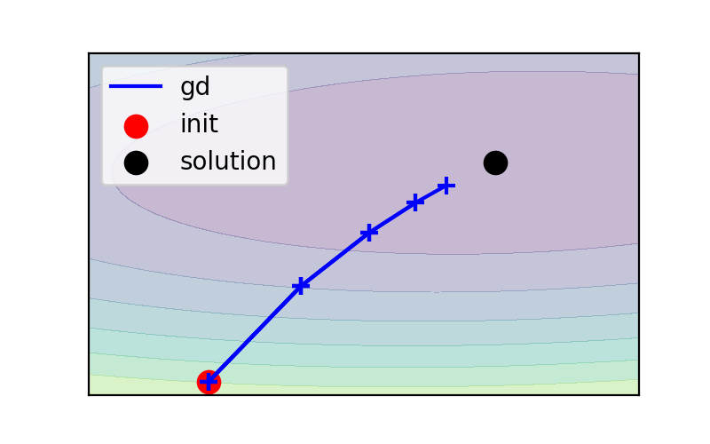 ] --- .center[ ] --- .center[ 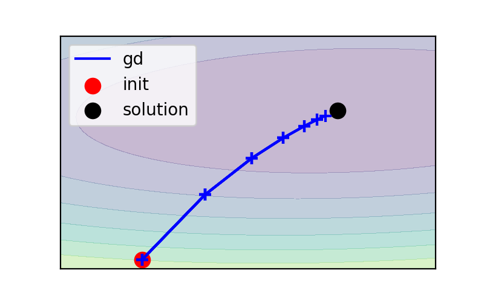 ] --- .center[ 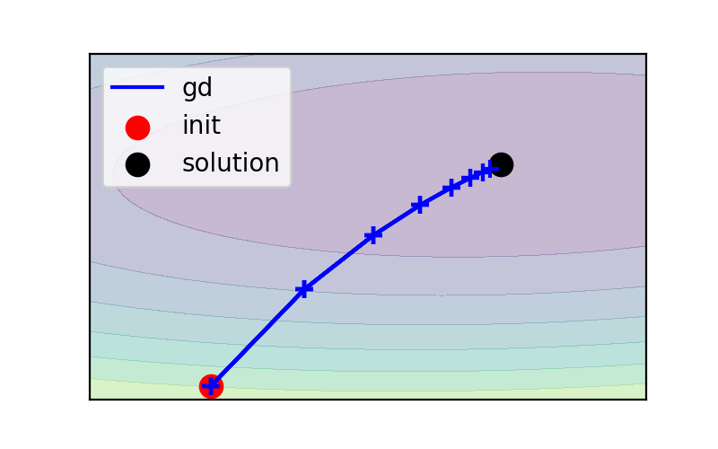 ] --- .center[ 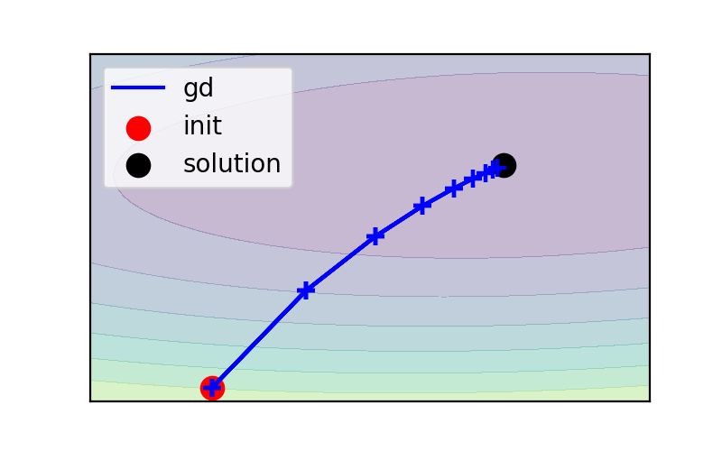 ] --- # Computing the gradients - Covered in this afternoon's lab work. --- # A final word of caution Not all data are linearly separable! .pull-left[<img src="../02_intro_to_machine_learning/figures/lin_separable.svg" width="100%">] .pull-right[<img src="../02_intro_to_machine_learning/figures/lin_not_separable.svg" width="100%">] .pull-left.shift-left[Linearly separable] .pull-right[*Not* linearly separable] --- # Take home messages - We learnt how to formulate the objective function for ridge regression and logistic regression -- - We saw how to derive the analytical solution of ridge regression and how to solve logistic regression by gradient descent -- - Linear models have nice merits: fast to train, interpretability -- - Nonetheless not all datasets are linearly separable <br/><br/>Next lecture: SGD, second-order methods